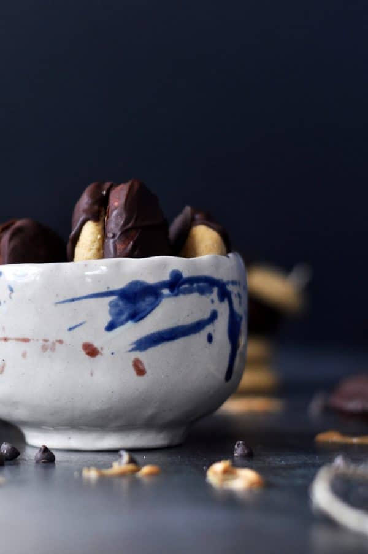

Ingredients
- 1 cup butter, room temperature (or coconut oil for dairy-free/vegan)
- ¾ cups organic cane sugar (or coconut sugar)
- ½ cup Old Home Foods All-Natural creamy peanut butter
- ½ cup butternut squash, cooked and pureed (may sub canned pumpkin)
- ½ cups all purpose gluten-free flour
- 1 ½ tsp. baking soda
- 2 scoops Collagen Peptides (optional – omit for vegan-friendly/additional 3 Tbsp all purpose gluten-free flour if omitted)
- ½ cup dairy-free chocolate chips
Directions
- Preheat oven to 375 degrees. Line baking sheet with parchment paper.
- In a medium mixing bowl combine butter, sugar, peanut butter and butternut squash. Mix together until very smooth.
- Add the flour and baking soda to the mixture and stir until well combined. Lastly add the optional collagen peptides or additional flour and fold into the dough.
- Scooping out small spoonfuls, roll the dough in the palm of your hands. Roll into a round ball and gently flatten into a disk onto the parchment lined baking sheet. Bake in the preheated oven for 7-9 minutes until the bottom and edges are golden brown.
- Remove from baking sheet and let cool on the counter or baking rack.
- Once the cookies have cooled, gently melt the chocolate chips and butter in a small saucepan over low heat. Stirring constantly so the chocolate won’t burn to the bottom or edges of pan. After all the chocolate has melted, remove from heat and begin dipping the cookies.
- Take a cookie and dip it halfway into the chocolate, using the back of a spoon to help spread the chocolate and scrape off excess chocolate. Place dipped cookies onto a parchment lined baking sheet.
- Place finished cookies in the freezer for 10-12 minutes to set the chocolate. Remove from freezer and serve.